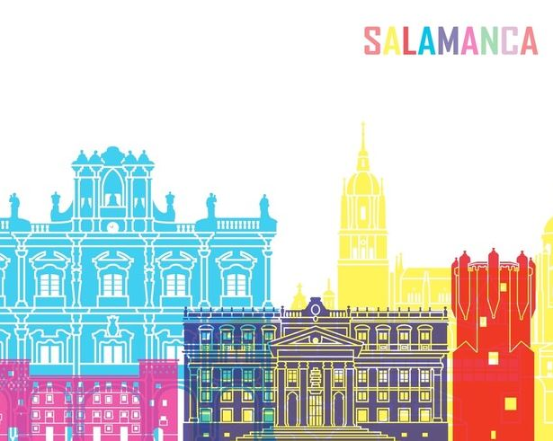
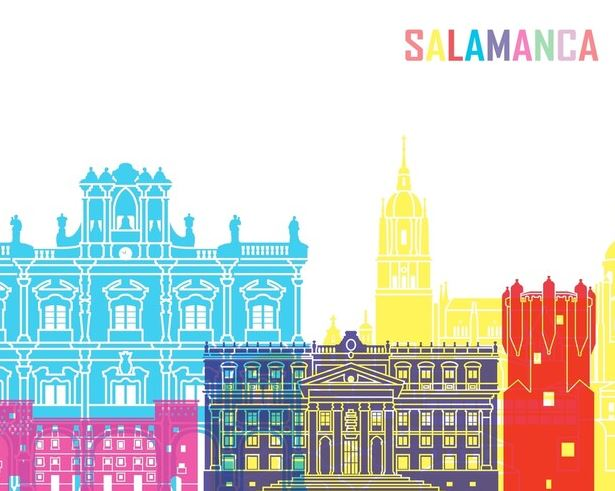
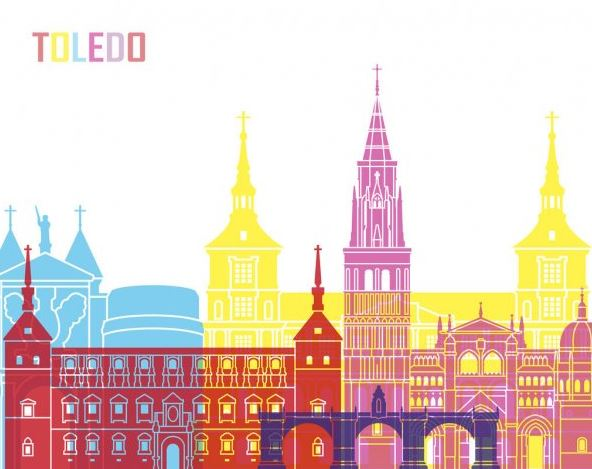
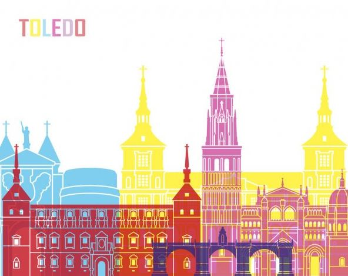
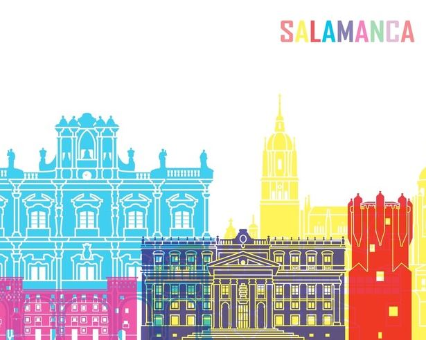
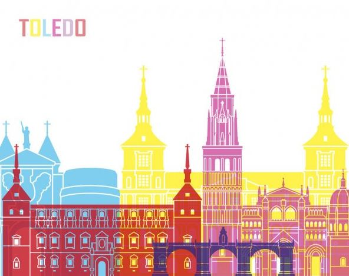

 

Spain being a country in the Iberian peninsula has some of the most diverse cultures in the world when it comes to architecture with traces of Roman architecture and Islamic architecture.
When the Renaissance began to spread from Italy made it clear that the era would leave a mark in both literature, art and architecture. The city of Salamanca is a city near the Tormes river and full of beautiful Renaissance architecture. Nearby the city square you can find bars, cafes, restaurants and cathedrals all made out of sandstone which gives the city its identity and name “La Dorada” or “Golden City” in Spanish.
The City Of Three Cultures! In the city of Toledo you can find a lot of traces of Muslims, Jews and Christians. Casco Histórico de Toledo or The Old Town Of Toledo is a part of the city that has a scent of the past, the town is an important part of the world, making it one of the UNESCO world heritage centers. The town is so old that there is a 900 year old mosque called the Mezquita de las Tornerías, an ancient church called Iglesia de la Magdalena and a synagogue called Sinagoga de Santa María La Blanca.
In conclusion, Spain is a county that is worth visiting for its historic cultural diversity and maybe even the modernity of some cities.

